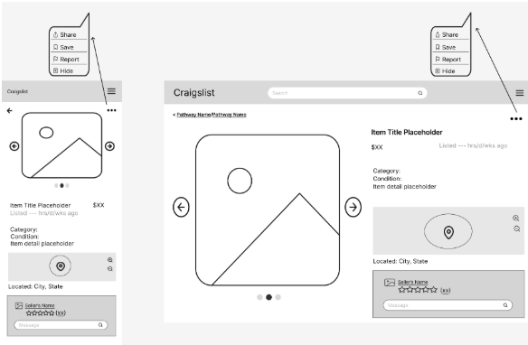

Week 4 – Wireframes
Overview
In Week 4, we created structured wireframes based on feedback from our usability testing. These wireframes focus on improving layout clarity, navigation, and overall usability without visual styling.
My Contribution – Item Listing Page

I designed the item listing page for both mobile and desktop views. This screen focuses on presenting item details clearly while improving navigation and interaction options for users.
Design Decisions
Improved Content Hierarchy
The item image is emphasized at the top, followed by structured details such as title, price, and description. This helps users quickly scan important information.
Clear Navigation Controls
Navigation arrows and layout structure were added to help users move between listings easily without confusion.
Better Use of Space
The layout separates content into clear sections, reducing clutter and improving readability compared to the original design.
Usability Improvements from Testing
These wireframes directly address issues identified during Week 3 testing.
- Added clear labels and structured layout to reduce confusion
- Improved connection between search results and item pages
- Made navigation more visible and predictable
- Organized information to reduce cognitive load
- Ensured consistency between mobile and desktop layouts
Impact
These changes improve usability by making the interface easier to understand and navigate. Users can now quickly identify key information, move between listings, and interact with the page more efficiently.